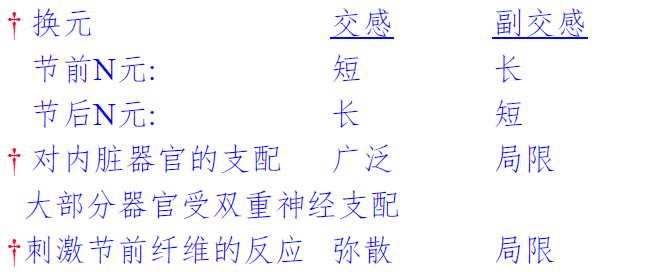

生物医学工程 | 解剖学 - 神经系统
神经系统
神经系统概况中的一些基本概念、术语
神经系统/周围神经系统/中枢神经系统/脊神经/脑神经/躯体神经/内脏神经/感觉纤维/运动纤维/植物性神经/交感神经/副交感神经
灰质：在脑和脊髓中，神经元的胞体和树突集中的部位，由于血管丰富，在新鲜标本上颜色灰暗，故称灰质。
白质：在脑和脊髓中，神经纤维（轴突+髓鞘）集中的部位，由于神经纤维表面的髓鞘含有类脂质，颜色发亮，故称白质
皮质：在大脑和小脑，大量神经元胞体和树突所形成的灰质集中于表层，故称为皮质。
神经核：在脑和脊髓中，除皮质外的其他部位，结构相似、功能相同的神经元胞体及其树突集中成灰质团块，称神经核。
神经节：在周围神经系统中，结构相似、功能相同的神经元胞体集中的部位称神经节。

神经系统调节机能的主要方式——反射活动
神经系统的组成
脊髓的大体解剖特点、基本位置、节段、前后侧角、板层概念、主要传导束的功能
解剖特点：全长粗细不等，有两个膨大（颈膨大和腰骶膨大，人体颈膨大明显）
基本位置：位于椎管内，上端与延髓相连，下端为脊髓圆锥。短于椎管，终丝终止于尾骨背面
节段：有31个节段，对应于31对脊神经。每一对脊神经的神经根所连的那一段脊椎就是一个节段。8+12+5+5+1
脊髓灰质：H型，中央有中央管，内涵脑脊液。
前角 **【运动】：内含运动神经元 **（α神经元-梭外肌-随意运动，γ神经元-梭内肌-维持肌张力，闰绍细胞-抑制性中间神经元）
脊髓前角运动神经元是躯干和四肢骨骼肌反射的初级中枢，是各种脊髓反射弧的最后一个环节“最后公路”
后角 【感觉】
侧角：交感神经的节前神经元。
白质——传导束
上行传导束 **（感受）：躯干和四肢感受器产生的冲动，通过脊髓后根**传入脊髓，经上行纤维束上传到大脑
固有束：联系脊髓的不同节段
下行传导束 （运动）：皮质脊髓束（起于大脑，支配四肢运动神经元）等
脑干分部、脑干网状结构
脑干：中脑，脑桥，延髓。（延髓下连脊髓）
大脑皮质，小脑，脊髓之间的联系都要经过脑干进行

脑干网状结构：在脑干中央区纤维纵横交错，内有大量的神经元胞体，共同组成脑干网状结构。（功能：上行激动系统，对内脏躯体运动控制）。
大脑分叶、胼胝体、大脑皮质/基底核、脑脊液
胼胝体：连接两半球的纤维板。功能：将一侧半球信息传导另一侧
大脑分成5叶：额叶，顶叶，枕叶，颞叶，岛叶
基地神经核（基底核）：大脑半球髓质内靠近基底部的灰质核团
脑脊液：由脉络丛产生，循环后送回血液
血脑屏障
脑屏障=【血-脑屏障】+【血-脑脊液屏障】+【脑脊液-脑屏障】
血脑屏障：毛细血管血液与神经元之间的选择通透性作用
结构基础——3层：毛细血管内皮与内皮细胞之间的紧密连接，毛细血管的基膜，神经胶质细胞突起在毛细血管周围形成的胶质膜
脑神经和脊神经
脑神经来源、脑神经基本功能

| 嗅神经 | 嗅觉 |
|---|---|
| 视神经 | 视觉-传入神经 |
| 动眼神经 | 视觉-传出神经 |
| 滑车神经 | 视觉 |
| 三叉神经 | 眼+上下颚。咀嚼+面部 |
| 展神经 | 眼 |
| 面神经 | 面部表情肌运动 |
| 前庭蜗神经 | 平衡+听觉 |
| 舌咽神经 | 咽肌运动 |
| 迷走神经 | 咽喉肌运动+感觉 |
| 副神经 | 胸锁乳突肌核斜方肌 |
| 舌下神经 | 舌肌运动 |
脊神经、神经节
脊神经是混合神经。躯体感觉纤维+躯体运动纤维+内脏感觉纤维+内脏运动纤维。
前根-运动神经纤维-脊髓前角，后根-感觉神经纤维-脊髓后角
脊神经节：感觉神经纤维，后根
神经元的活动规律
神经元功能分区：树突轴突（接受信息输入），胞体（整合），轴突（传导动作电位），轴突末梢（突触，神经递质）
轴浆运输：轴突内轴浆的流动具有运输物质的作用。分为顺向运输（胞体→轴突）和逆向运输（轴突→胞体）
营养作用：支配效应器官的运动神经元末梢释放一些营养因子，持续的调整效应器细胞的内在代谢活动
中枢神经元的联系方式：单线式，辐散式（扩大作用空间范围-传入通路），聚合式（突触后电位整合-传出通路），链锁式，环路式

突触的活动规律：突触及其效应、突触传递的特征、递质与受体的概念
突触：一个神经元轴突末梢与另一个神经元之间发生接触并进行信息传递。
突触分类：轴突-轴突/轴突-树突/轴突-胞体；兴奋性突触/抑制性突触；化学性突触/电突触（缝隙连接）
| 兴奋性突触后电位EPSP | 抑制性突触后电位（突触后抑制） | 抑制性突触后电位（突触前抑制） | |
|---|---|---|---|
| 突触前膜释放递质 | 兴奋性递质 | 抑制性递质 | 兴奋性递质↓ |
| 突触后膜 | $Na^+$内流，去极化 | $Cl^-$内流，超极化 | $Na^+$内流↓，去极化↓ |
| 结果 | 引起兴奋性突触后电位EPSP | 引起抑制性突触后电位IPSP | 兴奋性突触后电位EPSP幅度↓ |
轴突传递特征：单向传递，突触延搁，突触传递的总和作用（整和抑制&兴奋，时间总和+空间总和），相对易疲劳性（ACh的释放速度＞合成速度），对内环境的敏感性
神经递质：神经元合成，突触前末梢释放，能特异性作用于后膜受体并产生突触后电位的信息传递物质。（胞体合成，末梢储存释放）
受体：突触后膜或效应区细胞膜上的某些特殊蛋白质结构。胆碱能受体（与乙酰胆碱ACh结合），肾上腺素能受体（与去肾上腺素NE结合）
反射的活动规律：反射概念、反射弧、反射活动的规律
反射：机体在中枢神经系统参与下，通过反射狐对内外环境的刺激做出的反应。
反射弧：由 感受器，传入神经，神经中枢，传出神经，效应器5部分构成
反射活动的规律：
1）因果关系的规律性
2）交互抑制：协调方式-主要。一个中枢的兴奋会导致功能上与之相拮抗的另一个中枢的抑制。（A兴奋导致B抑制）
3）扩散：协调方式2。一个中枢的兴奋通过突触联系扩布到了其他中枢。
4）反馈：协调方式3。A）环路式突触-闰绍细胞-负反馈抑制。B）效应器→感受器
5）后放：刺激停止，中枢兴奋延续一段时间
感受器：感受器的概念与生理特征、牵涉痛（内脏疼痛引起远隔体表疼痛）
感觉形成：依赖于 感受器，感觉传入通路，大脑皮质感觉区
感受器：接受刺激并转换成神经冲动的特殊结构
生理特征：
1）适宜刺激：最敏感的刺激形式
2）换能作用：刺激→神经冲动——总和作用
3）编码作用：刺激包含的信息→动作电位编码
4）适应现象：恒定强度刺激感受器，感觉神经纤维的动作电位频率下降
牵涉痛：内脏疼痛引起远隔体表疼痛
感觉传入通路：特异与非特异感觉传导通路（特点、丘脑功能）
感受器→特异性感觉传入通路 或 非特异性感觉传入通路→大脑皮层
特异性感觉传入通路：经过特定传导束，能产生特定感觉并激发大脑皮层传出冲动

非特异性感觉传出通路：上行途中，发出侧支与脑干网状结构多次换元。不形成特定感觉，只维持大脑皮质神经元兴奋。
二者共用1、2级神经元，从脑干网状结构开始分化
丘脑核团：第一类（特异性投射核团），第二类（联络核），第三类（非特异性投射核团）

大脑皮质的感觉分析机能：体感1区的布局特点、感觉柱的概念
第一体感区——体表感觉。
大脑皮质感觉区投射特点：——体感一区
1）躯体感觉——交叉性；头面部感觉——双侧性
2）头足倒置，但是头面部正立
3）投射面积大小与感觉分辨精细程度有关，与感觉面积无关
感觉柱：感觉皮质细胞的纵向柱状排列构成大脑皮质最基本功能单位
调节功能
脊髓对躯体运动的调节：脊休克概念与恢复、运动单位、最后公路
脊休克：脊髓与脑脱离后一段时间内，脊髓丧失反射活动能力，进入无反应状态
恢复：简单的（屈肌反射，膝跳反射）→搔扒反射，对侧伸肌反射→复杂的（排便排尿）
运动单位：一个α运动神经元及其所支配的全部肌纤维。骨骼肌活动以运动单位为基础进行。
最后公路：脊髓前角运动神经元是躯干和四肢骨骼肌反射的初级中枢，是各种脊髓反射弧的最后一个环节“最后公路”
脊髓对躯体运动的调节：牵张反射概念与过程
牵张反射：有神经支配的肌肉受外力牵拉，引起该肌肉收缩或者产生张力。（腱反射&肌紧张）
感受器：肌梭
牵张反射过程：外力牵拉→肌梭感受器兴奋→Ⅰ类和Ⅱ类传入纤维→脊髓灰质→α纤维→梭外肌纤维缩短+（γ运动神经元→梭内肌纤维→Ⅰ类和Ⅱ类传入纤维→α纤维→梭外肌纤维）
γ环路-肌紧张-肌肉收缩长度：γ运动神经元→梭内肌纤维→Ⅰ类和Ⅱ类传入纤维→α纤维→梭外肌纤维
α神经-梭外肌-肌肉运动；
γ神经-梭内肌-调整肌梭敏感性，紧张性

脑干对躯体运动的调节：去大脑僵直基本原因
去大脑僵直原因：由于切断了大脑皮层运动区和纹状体等部位与网状结构的功能联系，造成抑制区活动↓，易化区活动↑，以致肌紧张过度而出现去大脑僵直
大脑对躯体运动的调节：大脑皮层中央前回（4、6区）主要运动区的投射特点、锥体系与锥体外系概念与基本功能、古旧新小脑基本功能
大脑皮层与运动相关的区域有两个：4区和6区
大脑皮质运动区投射特点：——中央前回（4，6）
1）躯体运动——交叉性，头面部肌肉——双侧运动区
2）精细机能定位：头足倒置，但面部正立
3）投射面积大小与运动精细复杂程度有关，与肌肉大小无关
4）适当强度刺激只会引起个别肌肉收缩
注意对比（运动区和感觉区）
非重点：
| 锥体系 | 锥体外系 | |
|---|---|---|
| 概念 | 支配骨骼肌随意运动的主要传导通路 | 锥体系以外协调骨骼肌运动的下行传导通路 |
| 基本功能 | 执行随意运动 【发动运动】 | 调节肌紧张, 肌群协调性 【协调运动】 |
| 起源 | 额叶+颞叶 | 大脑皮质广泛区域 |
重要：
| 古小脑-前庭小脑 | 与身体平衡有关 |
|---|---|
| 旧小脑-脊髓小脑 | 控制肌紧张，协调随意运动 |
| 新小脑-皮质小脑 | 精细运动 |
交感神经节、交感分布特点、内脏运动神经机能特点
交感神经节交换神经元。
第一级神经元（节前神经元）的胞体位于脊髓，发出纤维（节前纤维）离开脊髓，构成脊神经，末梢终止于椎旁神经节/椎前神经节，统称交感神经节。

交感分布特点：
1）节前纤维短，节后纤维长
2）一根节前纤维可以引发多个节后神经元兴奋

内脏运动神经机能特点：
1）双重神经支配——彼此拮抗
2）植物神经中枢具有紧张性活动——持续发放冲动
3）外周作用有抑制性和兴奋性两种
4）内脏活动相对独立
5）主要维持内环境稳定
6）递质及受体——NE（大部分交感后）和ACh（交感前，副交感前后，部分交感后）
| 递质 | 受体 | 效应 | 阻断剂 | |
|---|---|---|---|---|
| 交感/副交感节前纤维 | ACh | N型（烟碱型） | 骨骼肌收缩 | 六烃季胺(N1) 箭毒(N1, N2) 十烃季胺(N2) |
| 副交感节后，部分交感节后 | ACh | M型（毒蕈碱型） | 心肌-抑制 胃平滑肌-收缩 | 阿托品 |
| 大部分交感节后 | NE | α | 平滑肌-大部分兴奋 | |
| 大部分交感节后 | NE | β | 平滑肌-大部分抑制 心肌-兴奋 |
学习记忆基本概念、条件反射、快慢波睡眠
学习记忆
学习：接受外界环境信息而影响自身行为的神经活动
记忆：将学习到的信息进行储存和提取再现的神经活动过程
条件反射
形成条件反射的条件：无关刺激与非条件刺激在时间上的结合，这个过程成为强化
消退抑制（条件反射的抑制）：条件反射建立以后，反复应用条件刺激而不给予非条件刺激强化，条件反射逐渐减弱
条件反射生物学意义：使机体具有预见性，灵活性，适应性
睡眠
慢波睡眠：EEG呈同步化慢波。
快波睡眠：做梦，快速眼动
（首先进入慢波）慢波→快波→慢波→快波→……。越后期，快波越长
非定向突触传递特点
1）无前膜与后膜之分
2）支配为1 : n
3）距效应器远（>20 nm）
4）费时（>1s）
5）不一定产生效应
结构基础：曲张体
重点
-
突触的结构形式——平滑肌和骨骼肌突触形式不同——曲张体
-
非定向突触的传递形式与骨骼肌的神经的突触传递形式的不同
-
自律性的细胞的异同点
-
脊休克/去大脑僵直：影响的是什么东西
-
神经节：可以分为脊神经节（负责感觉）和腹腔神经节（交感神经节—最大的内脏神经）
-
神经节的节前纤维，节后纤维
-
阈值/阈电位
-
兴奋收缩偶联：在心肌和骨骼肌上的差别（不应期/期前收缩/心肌整体上表现为全或无）
- 自动节律性收缩:引起心肌收缩的兴奋源是心脏自身的窦房结,窦房结有节律地产生兴奋而引起心肌收缩。而骨骼肌收缩的兴奋源是运动神经中枢。
- 对细胞外液的Ca2浓度有明显依赖性:心肌细胞的肌质网终池不发达,容积很小,贮存Ca2量比骨骼肌少,因此,心肌兴奋—收缩耦联所需的Ca2除终池释放外,约有10%~20%需要依赖于细胞外液中的Ca2内流来补充。骨骼肌则由于肌质网贮备有大量的Ca2,因此受细胞外Ca2浓度改变影响较小。
- “全或无”同步收缩:心肌由于低电阻闰盘的存在,兴奋能在细胞间迅速传递,兴奋传至心房或心室时,几乎同时遍及整个心房或心室肌细胞,从而引起所有心房肌或心室肌同时收缩,称为“全或无”式收缩。而骨骼肌产生的兴奋不能在细胞之间直接传递,其同步收缩只能通过不同运动神经元和神经末梢同时发放神经冲动来引发,由于各神经元的兴奋性高低各不相同,所以其同步收缩性较差。
- 不发生强直收缩:心肌发生一次兴奋后,其有效不应期特别长,可达200毫秒,在有效不应期内,任何刺激都不能使心肌细胞再发生兴奋和收缩,因此,心脏不会产生强直收缩,从而保证了心脏的充盈与射血。而骨骼肌有效不应期仅为2毫秒左右,前后收缩可叠加使骨骼肌出现持续的强直收缩活动。
- 二者的收缩神经调节特点不同:骨骼肌的收缩受意识支配，收缩有力;而心肌的收缩不随意，但有节律性.
-
中枢和周围的区别
-
12对脑神经
-
脊髓前角/后角
-
大致脑干分几个结构，几个中枢
-
心血管中枢，呼吸中枢
-
脑干网状结构：由很多核团交互组成。维持功能：各种生理活动，分泌，睡眠觉醒。有两个区域，抑制区和易化区。——【特异性和非特异性】【去大脑僵直】
-
运动和感觉：交叉对侧，定向不定向。脑的皮质运动区
-
局部兴奋-总和；动作电位的差别
-
正反馈负反馈
-
膝跳反射，对侧伸肌反射
-
睡眠和觉醒对人体的影响（身体，内脏）：书上有，大半页纸
“最”
- 神经系统：人体结构和功能最复杂的系统
- 黑质：中脑最大核团
- 躯体运动最基本的反射中枢在脊髓
- 大脑皮层最基本的活动是信号活动
- 迷走神经是最长的脑神经
- 皮质脊髓束：脊髓最大的下行传导束
- 三叉神经：脑神经种最粗大的一对
课本课后习题
-
脊髓、脑干、大脑内灰质分布有哪些特点？大脑的灰质为何集中在表面？有何重要意义？
-
脊髓灰质分布特点：呈H状，在内层，是一个连续的、纵贯脊髓全长的细胞柱。
-
脑干灰质分布特点：机能相同的神经细胞集合成团或柱状的神经核，断续地存在白质中
-
大脑灰质分布特点：灰质分布在外层，称为大脑皮质。且髓质中埋藏着一些灰质核团，叫基底神经核
-
在脊髓和延脑，外围主要是白质，内部是灰质；在大脑和小脑以及脑干，外围是灰质，内部是白质。
-
-
内囊出血为什么会导致偏瘫和偏感觉障碍？说明其解剖学基础
-
小脑是怎样与延髓、脑桥和中脑相联系的
-
12对脑神经分别与脑的哪些部位相连？
-
脊神经节、交感神经节都是神经节，二者有何异同？
-
用叩诊锤叩击膝关节髌韧带，除引起膝跳反射外，我们还会感觉到关节的弯曲程度。画出示意图说明这一感觉通路的组成。
-
什么是锥体系？什么是锥体外系？请用简图表示出来。
-
说明突触后抑制和突触前抑制的产生机制。
-
反射活动主要通过哪些方式进行协调？
-
说明肌紧张（肌张力）的产生原理及意义。
-
分别说明瞳孔对光反射、肘关节的屈肌反射的反射弧。
-
瞳孔对光反射：视网膜→视神经→视交叉→两侧视束→上丘臂→顶盖前区→动眼神经→节后纤维→瞳孔括约肌
-
屈肌反射：皮肤痛觉感受器→脊髓灰质→1→兴奋性中间神经元→屈肌的运动神经元（→2→兴奋性中间神经元侧支→抑制性中间神经元→伸肌神经元）
-
-
脊休克现象说明了什么？
- 脊髓可以完成这些简单反射活动，正常时受高位中枢的调节
-
中央前回运动区对躯体运动的控制有哪些特点？
- 对躯体运动的调节是交叉进行的（对侧支配），头面部肌肉的支配多数是双侧性
- 具有精细的功能定位
- 功能代表区的大小与运动的精细复杂程度有关
- 刺激所得肌肉运动反应单纯
声明：此blog内容为上课笔记，仅为分享使用。部分图片和内容取材于课本、老师课件、网络。如果有侵权，请联系aursus.blog@gmail.com删除。